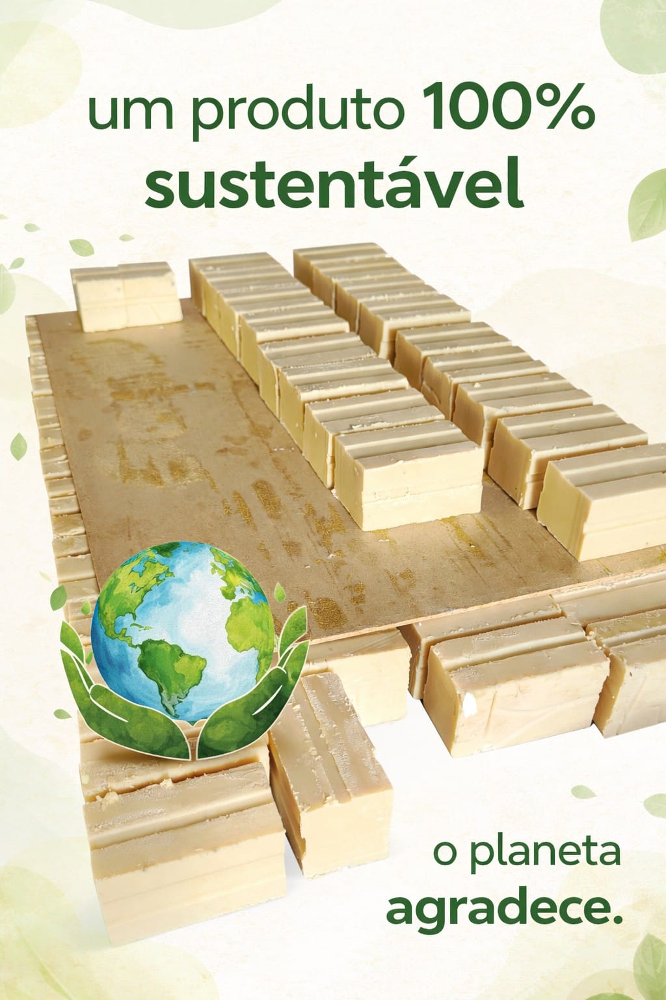

Por que escolher esse sabão?
Nosso produto reaproveita óleo usado e transforma esse resíduo em uma solução útil, econômica e sustentável para o uso diário.
Produção sustentável
Reaproveita óleo usado e contribui para reduzir o descarte incorreto no meio ambiente.
Limpeza no dia a dia
Um produto prático e eficiente para apoiar a rotina da casa com mais economia.
Produto artesanal
Cada barra é feita com cuidado, valorizando simplicidade, utilidade e consciência ambiental.
Nosso produto
- ✔ Produção artesanal
- ✔ Feito com óleo reciclado
- ✔ Limpeza eficiente para o dia a dia
- ✔ Mais consciência no consumo
- ✔ Compra direta pelo WhatsApp
Fotos do produto
Conheça melhor o sabão sustentável e veja o produto real.

Compromisso com o meio ambiente
Cada barra de sabão é produzida com foco no reaproveitamento de óleo usado, evitando que esse resíduo seja descartado de forma incorreta na natureza.
Ao escolher esse produto, você contribui diretamente para um consumo mais consciente e sustentável.
Peça direto pelo WhatsApp
Fale conosco de forma rápida e receba mais informações para fazer seu pedido.